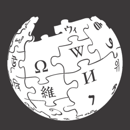

|  Wikipedia:
Launched into the internet allowed everyone to share their own bit of knowledge. People could post and edit information that others could see and change it at will. This allowed any subject to be shared and you didn’t even need to know how to make a website or launch it. This allowed a great passing of information and a great resource of knowledge and news topics of old that may be hard to understand. |